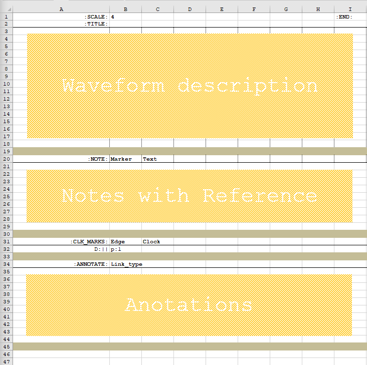
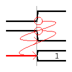
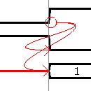
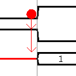
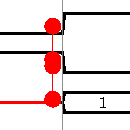
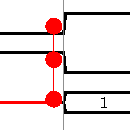
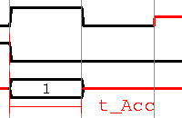

Template and Markup¶
A worked out example with a recommended flow and other quirks
Organising the .xlsx file¶
An .xlsx file may contain more than one sheet. The sheets are to be uniquely named.
Tip
.xlsx files is a zip archive which include xml descriptions for the various sheets and some other anciliary information. Although they can be placed under version control, zips are binary files and hence may not be the best way to feed git. An unzipped folder might be better suited for version control
In addition, we encourage the user to add two sheets named index_nt and Notes_nt. These will not be rendered but is a good mechanism to capture information regarding the contents of the workbook as well as allow easy navigation. Navigating between the sheets can be done with the sheets tab, but maintaining this info within index and providing hyperlinks to sheets with a short descriptive summary is highly recommended as a method of navigation.
Fig:Recomended workbook layout
Sheet naming convention¶
- index_nt : for the cover sheet.
- notes_nt : For the end cover sheet, with any additional info
Note
the python parser script will look for the specific character seq _nt to ignore sheets that are not to be rendered.
- New sheets can be created by making a copy of template. However, ensure the sheet name is changed and the number removed.
- Keep names short, use the index instead to capture information regarding content.
- Sheet names may or may not be descriptive. For example when using the index as a navigation device it is perfectly acceptable to names the sheets as say set1, set2 etc.
Note
Each sheet will be rendered to a pdf, svg or png file with its sheet name. When used with -all, in addition to sheets being rendered individually they will also be bundeled into a single pdf with its name as the workbook name.
Working from the template¶
Template is divided into 3 sections row wise.
- Waveform description
- Notes,
- Annotations.
The other markers in the template are required by the python parser and is used as a mark-up Mark-up usually follows the convention :markup_name: , i.e. a reserved mark-up_name bracketed by colons
Note
Column 1 or A in the excel sheet cannot be empty. The parser interprets most markers when placed in the first column. The only exception is :END:
| SCALE: | The number placed in the next column is used to control the scale of the waveform. Scale impact how many clocks are rendered and is an important parameter to fit the required number of clocks after allowing for margins on a ISO:A4 paper in landscape mode. Default scale is 4, allowing unto 32 clocks (or xl columns) to be rendered |
|---|---|
| END: | When :END: is specified in any column within the same row as :SCALE:, the parser limits time to that column. See Example TODO |
| TITLE: | Text following title will be placed as the title of the waveform: See example TODO |
| NOTE: | The notes area has three logical columns. The left most column just carries the text NOTE: This is provided so as to allow placement of multiline notes to form say a bulleted list. |
| :NOTE: | Marker | Text |
|---|---|---|
| NOTE: | cell_id> | Note accompanying the marker |
| NOTE: | This is a continuation line of note above if ‘Marker’ is empty |
| CLK_MARKS: | Control the edge and the clock on which the clock boundary is drawn.
|
|---|
| :CLK_MARKS: | Edge | Clock |
|---|---|---|
| D:|| | p:1 |
|
Note
For edges to be drawn it is important that each column apart from any containing a break ‘|’ should be numbered.
| ANNOTATE: | Mark-up to render edges, constraints etc. Mark-up and link_type together decide the intended style of annotation
|
|---|
Note
When more than one constraint ends on the same destination, they are drawn one below other. However, this might cause them to overlap another waveform. When such conditions are detected the script emits an error of the form:: [WARNING 554] add_arrows(): Multiple dimensions drawn may overlap a waveform, Add a spacer in excel if required R24> W24>
| :ANNOTATE: | Link Type | Markers/Action. | Render |
|---|---|---|---|
| E:o-> | C:r |
|
 |
| E:o-> | B:r |
|
 |
| L:*-> | B:r |
|
 |
| L:*-* | C:r |
|
 |
| L:*-* | B:r |
|
 |
| E:|-| | B:r |
|
 |

{kind=link}
{kind=link}
{kind=link}
{kind=link}
{kind=link}
{kind=link}
{kind=link}
{kind=link}